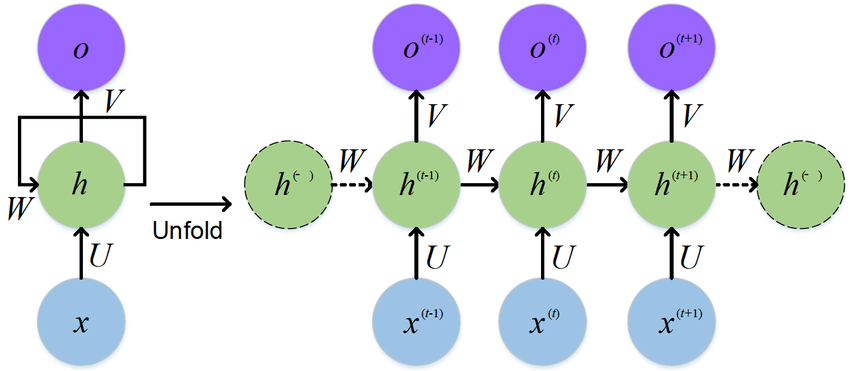
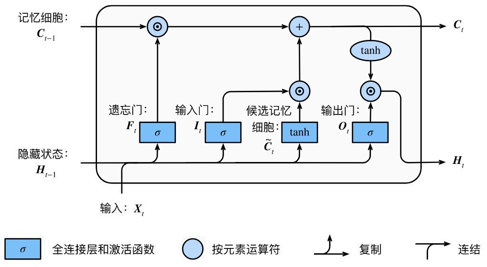

一. 概念
n-gram语言模型（详见，这篇博文），因为其参数空间随$N$指数增长（$O(V^n)$），故$n$不能过大，无法建立过长的依赖（$n<4$）。而循环神经网络（recurrent neural network）语言模型，通过隐藏状态来存储之前（时间步）的信息，可以建立更长的依赖。
二. 循环神经网络（RNN）
RNN可视为同一神经网络的多次赋值，该网络每次的输出（状态）将被作为网络下一次的输入，这个过程可以展开，如下图：

其中，RNN在$t$时，接收到输入 $\mathbf{x}_{t}$后，隐藏层的值为$\mathbf{h}_t$，输出为$\mathbf{o}_t$，$U$、$V$、$W$表示权值矩阵，前向传播过程如下：$$ \mathbf{h}_t = \phi (U\mathbf{x}_{t-1} + W\mathbf{h}_{t-1} + \mathbf{b}_{hid})\\ \mathbf{o}_t = V\mathbf{h}_{t} + \mathbf{b}_{out} $$其中，激活函数$\phi$通常为$\text{tanh}$。
RNN无法处理长距离的依赖，序列过长（时间步$t$较大时）会出现梯度消失的问题。假设$t$时刻，损失函数为$L_t$，$L = \sum_{t=0}^T L_t$：
$$\frac{\partial L_{t}}{\partial V}=\frac{\partial L_{t}}{\partial \mathbf{o}_{t}} \frac{\partial \mathbf{o}_{t}}{\partial V}\\ \frac{\partial L_{t}}{\partial U}=\frac{\partial L_{t}}{\partial \mathbf{o}_{t}} \frac{\partial \mathbf{o}_{t}}{\partial \mathbf{h}_{t}} \frac{\partial \mathbf{h}_{t}}{\partial U} + \frac{\partial L_{t}}{\partial \mathbf{o}_{t}} \frac{\partial \mathbf{o}_{t}}{\partial \mathbf{h}_{t}} \frac{\partial \mathbf{h}_{t}}{\partial \mathbf{h}_{t-1}} \frac{\partial \mathbf{h}_{t-1}}{\partial U} + \cdots + \frac{\partial L_{t}}{\partial \mathbf{o}_{t}} \frac{\partial \mathbf{o}_{t}}{\partial \mathbf{h}_{t}} \frac{\partial \mathbf{h}_{t}}{\partial \mathbf{h}_{t-1}} ... \frac{\partial \mathbf{h}_{0}}{\partial U} = \sum_{i=0}^t \frac{\partial L_{t}}{\partial \mathbf{o}_{t}} \frac{\partial \mathbf{o}_{t}}{\partial \mathbf{h}_{t}}(\prod_{j=i+1}^{t}\frac{\partial \mathbf{h}_{j}}{\partial \mathbf{h}_{j-1}})\frac{\partial \mathbf{h}_{i}}{\partial U} \\ \frac{\partial L_{t}}{\partial V} = \sum_{i=0}^t \frac{\partial L_{t}}{\partial \mathbf{o}_{t}} \frac{\partial \mathbf{o}_{t}}{\partial \mathbf{h}_{t}}(\prod_{j=i+1}^{t}\frac{\partial \mathbf{h}_{j}}{\partial \mathbf{h}_{j-1}})\frac{\partial \mathbf{h}_{i}}{\partial W} $$其中，因为：$L_t$是$\mathbf{h}_{t}$的函数，$\mathbf{h}_{t}$是$W$的函数；同时，$\mathbf{h}_{t}$是$\mathbf{h}_{t-1}$的函数，$\mathbf{h}_{t-1}$也是$W$的函数，故导数可写作上述的链式偏导求和的形式（Backpropagation through time，BPTT）。
$\prod_{j=i+1}^{t} \frac{\partial \mathbf{h}_{j}}{\partial \mathbf{h}_{j-1}}$是“梯度消失”的主要原因，因$\mathbf{h}_t = \text{tanh} (U\mathbf{x}_{t-1} + W\mathbf{h}_{t-1} + \mathbf{b}_{hid})$，则$\prod_{j=i+1}^{t} \frac{\partial \mathbf{h}_{j}}{\partial \mathbf{h}_{j-1}} = \prod_{j=i+1}^{t}\text{tanh}^{'}W $，$\text{tanh}^{'}$如下所示：
可见，$\text{tanh}^{‘} < 1$，若权重$W$位于0-1之间，那么 $\prod_{j=i+1}^{t}\text{tanh}^{‘}W$ 在$i$较小时（距$t$较远），趋近于0（所谓梯度消失）；若权重$W$较大，则会趋近于无穷，导致所谓梯度爆炸。
当然，总梯度（和）不会消失，RNN中的梯度消失只是指，远距离的梯度消失（远距离的输入$x_i$/隐藏状态$\mathbf{h}_i$，将不对最终的梯度值有贡献），即梯度被近距离梯度主导，导致模型难以学到远距离的依赖关系。
二. LSTM
2.1 LSTM模型
裁剪梯度可以应对RNN中的梯度爆炸，但无法解决梯度消失的问题。长短时记忆网络(Long Short Term Memory Network, LSTM)，通过门控制，将短期、长期记忆相结合，一定程度上解决了RNN中的梯度消失问题（数学解释）。

LSTM中引入了单元状态(cell state，也称长期状态、记忆状态)，用于保存长期的状态，并用三个开关：输入门$\mathbf{i}_t$（input gate）、遗忘门$\mathbf{f}_t$（forget gate）和输出门$\mathbf{o}_t$（output gate），对单元、隐藏状态中的信息流动进行控制。
$$\begin{align} \mathbf{f}_t &= \sigma_g(W_{f} \mathbf{x}_t + U_{f} \mathbf{h}_{t-1} + \mathbf{b}_f) \\ \mathbf{i}_t &= \sigma_g(W_{i} \mathbf{x}_t + U_{i} \mathbf{h}_{t-1} + \mathbf{b}_i) \\ \mathbf{o}_t &= \sigma_g(W_{o} \mathbf{x}_t + U_{o} \mathbf{h}_{t-1} + \mathbf{b}_o) \end{align} $$$\sigma_g$ 为sigmoid函数，故门向量元素值域为[0,1]，通过使用按元素乘 $\circ$ 来实现状态控制：
$$\begin{align} \tilde{\mathbf{c}_t} &= \sigma_c(W_{c} \mathbf{x}_t + U_{c} \mathbf{h}_{t-1} + \mathbf{b}_c) \\ \mathbf{c}_t &= \mathbf{f}_t \circ \mathbf{c}_{t-1} + \mathbf{i}_t \circ \tilde{\mathbf{c}_t}\\ \mathbf{h}_t &= \mathbf{o}_t \circ \sigma_h(\mathbf{c}_t) \end{align} $$- $\tilde{\mathbf{c}_t}$为候选状态，$\sigma_c$为$\text{tanh}$函数，故其值域为[-1,1]；
- 通过遗忘门和输入门，控制记忆状态和候选状态的信息流动，对当前时间步的记忆状态进行更新；
- $\sigma_h$也为$\text{tanh}$函数，输出门控制记忆状态到隐藏状态的信息流动，隐藏状态将供输出层使用。
2.2 GRU模型
GRU (Gated Recurrent Unit)是LSTM的一种变体，它简化了LSTM，并保持着和LSTM接近的效果。GRU对LSTM做了两个简化：
- 将输入门、遗忘门、输出门合并为：更新门$\mathbf{z}_t$（Update Gate）和重置门$\mathbf{r}_t$（Reset Gate）；
- 将单元状态与隐藏合并为一个隐藏状态。
$$ \begin{align} \mathbf{z}_t &= \sigma_g(W_{z} \mathbf{x}_t + U_{z} \mathbf{h}_{t-1} + \mathbf{b}_z) \\ \mathbf{r}_t &= \sigma_g(W_{r} \mathbf{x}_t + U_{r} \mathbf{h}_{t-1} + \mathbf{b}_r) \end{align} $$
$\sigma_g$ 为sigmoid函数，故门向量元素值域为[0,1]，同样通过使用按元素乘 $\circ$ 来实现状态控制：
$$ \begin{align} \tilde{\mathbf{h}_t} &= \phi_h(W_{h} \mathbf{x}_t + U_{h} (\mathbf{r}_t \circ \mathbf{h}_{t-1}) + \mathbf{b}_h) \\ \mathbf{h}_t &= (1 - \mathbf{z}_t) \circ \mathbf{h}_{t-1} + \mathbf{z}_t \circ \tilde{\mathbf{h}_t} \end{align} $$- $\tilde{\mathbf{h}_t}$ 为候选隐藏状态，$\phi_h$为$\text{tanh}$函数；
- 重置门控制了隐藏状态的信息如何流入当前时间步的候选隐藏状态（丢弃无关的历史信息）；
- 更新门 $\mathbf{z}_t$ 控制上一时间步的隐藏状态和当前时间步的候选隐藏状态的信息组合。
2.2 双向LSTM
双向循环神经网络认为，当前时间步不仅由较早时间步决定，也可能由后面较晚时间步决定，例如句子前面的用词会根据后面的词进行修改。

双向循环神经网络增加从后往前传递信息的隐藏层，网络通过从前往后、从后往前的双向信息传递来建模这个过程：
$$\begin{align} \overrightarrow{\mathbf{h}}_{t} &= \text{LSTM}(\overrightarrow{\mathbf{h}}_{t-1}, \mathbf{x}_{t})\\ \overleftarrow{\mathbf{h}}_{t} &= \text{LSTM}(\overleftarrow{\mathbf{h}}_{t+1}, \mathbf{x}_{t})\\ \mathbf{h}_{t} &= \text{Concat}(\overrightarrow{\mathbf{h}}_{t}, \overleftarrow{\mathbf{h}}_{t}) \end{align} $$其中，LSTM可被替换为其他循环神经网络。2.3 深度LSTM
在深度学习中，通常会堆叠多个隐藏层，获得较深的循环神经网络，经验上，通常能获得更好的效果。
$$\begin{align} \mathbf{h}_{t}^{(1)} &= \text{LSTM}(\mathbf{h}_{t-1}^{(1)}, \mathbf{x}_{t}), \quad \text{Input layer}\\ \mathbf{h}_{t}^{(l)} &= \text{LSTM}(\mathbf{h}_{t-1}^{(l)}, \mathbf{h}_{t}^{(l-1)}), \quad \text{Hidden layer} \end{align} $$
深层双向LSTM (RNN)通常有以下两种形式，参考：
左图表示，前向信息传播与后向信息传播，独立必行，仅在最后的输出层作拼接。右图表示，每层中，前向和后向传播的信息都进行拼接，并馈送到下一层的前向、后向层。
2.4 LSTM并行
RNN在 $t$ 时刻隐层状态依赖 $t$ 时刻的输入 $\mathbf{x}_{t}$ 与 $t-1$ 时刻隐层状态 $\mathbf{h}_{t-1}$，很难进行不同时间步间的并行。RNN的并行是指，同一时间步，不同数据间的并行，即同步计算不同数据由 $t$ 至 $t+1$ 时刻的状态变化。
三. Reference
Blog: Understanding LSTM Networks
Blog: LSTM如何解决梯度消失问题
Zhihu: RNN梯度消失和爆炸的原因
Zhihu: LSTM如何解决梯度消失问题
D2l: 6. 循环神经网络
Stackoverflow: Difference between bidirectional_dynamic_rnn and stack_bidirectional_dynamic_rnn in Tensorflow
Zhihu: 放弃幻想，全面拥抱Transformer：自然语言处理三大特征抽取器（CNN/RNN/TF）比较